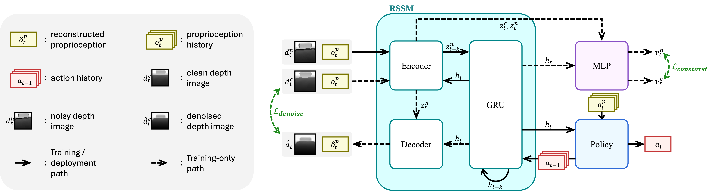

DAWN: Noise-Robust Quadruped Parkour via Depth-Denoising World Models
From direct sunlight to pitch darkness—same model, zero recalibration.
Abstract
Motivation
Vision-based parkour methods rely on hand-tuned depth post-processing filters at deployment. These filter parameters are scene-dependent, rarely disclosed, and require manual recalibration for every new environment—hindering both reproducibility and real-world robustness.
Vision-based legged locomotion methods assume clean depth at training time and rely on hand-tuned post-processing filters at deployment. However, filter parameters are rarely disclosed, hindering reproducibility, and performance degrades substantially when depth noise is left unaddressed. Building noise robustness directly into the learning pipeline would eliminate this dependency. While such robustness has been explored for proprioceptive inputs, analogous approaches for depth perception remain largely absent in legged locomotion. We propose DAWN (Denoising and Alignment in World models for Noise-robustness), a noise-robust perception framework for legged locomotion, which builds noise robustness directly into a world model via two modifications: (1) feeding noisy depth to the encoder while keeping clean depth as the reconstruction target, forcing the model to implicitly denoise its input; and (2) applying contrastive learning to align the latent states of noisy and clean depth. Importantly, DAWN is agnostic to the specific noise model, requiring no assumptions about the noise distribution at deployment. Furthermore, it incurs no additional inference cost over existing world model-based methods. Without any manual filter calibration—relying solely on the learned noise model—DAWN achieves zero-shot quadruped parkour on a Unitree Go1: traversing stairs up to 18 cm, clearing gaps up to 70 cm, and mounting steps up to 45 cm from raw depth observations. Ablation studies show that denoising and contrastive alignment contribute at complementary levels—reconstruction and representation, respectively—and yield additive gains when combined.
Real-World Deployment
Deployed on a Unitree Go1 with an Intel RealSense D435i—without any manual filter calibration.
Robustness to Lighting Variations
Outdoor sunlight induces IR interference that amplifies depth corruption. DAWN handles these varying noise conditions without any environment-specific recalibration.
Method Overview
DAWN modifies only the training signals of the RSSM—not its architecture. The encoder receives noisy depth while the decoder reconstructs clean depth, and a contrastive loss aligns their latent representations. At deployment, all training-only components are removed, adding zero overhead.

Simulation Results
Compare the noisy depth input with DAWN's reconstruction—DAWN discards noise, retains only task-relevant geometry, and drives agile parkour directly from it.
BibTeX
@article{dawn2026,
title={DAWN: Noise-Robust Quadruped Parkour via Depth-Denoising World Models},
author={Anonymous},
year={2026}
}